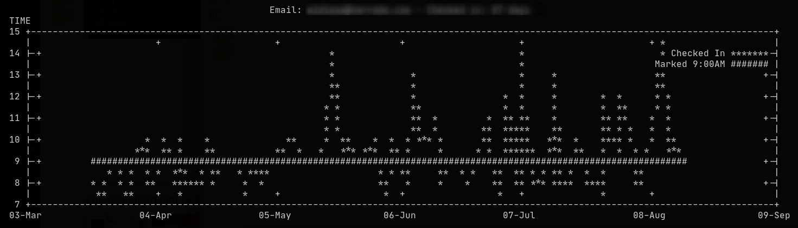
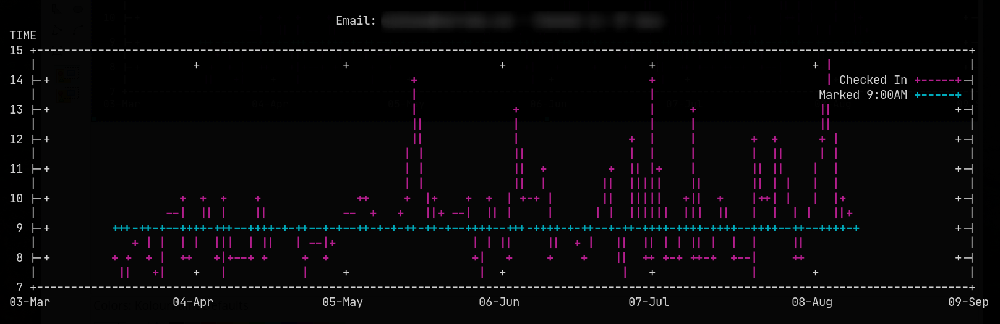

Goal:
Create chart from csv. From a terminal, minimalistic style, no fancy stuff.
Toys:
- gnuplot - main tools for plotting chart
- feedgnuplot - quick plot using
gnuplot
.
For a quick plot, just use feedgnuplot. Goal achieved.
For more options, go crazy dive into gnuplot itself. Create HTML page using ansi2html.
- ansi2html - If you want to create HTML page from the ANSI chart
Findings:
- Put some ANSI color to
gnuplotchart byset terminal ansi256.- For more control of the final HTML, create a separate .css ANSI color file with
ansi2html -H > ansi.css
Comparison, with, and without ANSI
Without ANSI color:

With ANSI256 color:

The gnuplot script:
# Perabotan lenong. Setting gnuplot
# Set the legend inside the chart
set key inside
# Set the title. 'email' = variable passed from bash script
set title email
# Tell gnuplot the first column is a 'time'
set xdata time
# Define the format
set timefmt "%Y-%m-%d"
# Plot the x axis with date-month only
set format x "%m-%b"
# Set output to ANSI256 colour, and size
set terminal dumb ansi256 150,22
# Toy this if want to export to png
# set terminal png medium size 640,480
# Set y label
set ylabel "TIME" offset character 5,9
# Plot col 1 vs col 2, col 1 vs col 3
plot file using 1:2 with lines title "Checked In", '' using 1:3 with lines title "Marked 9:00AM"
CSV sample:
2020-03-17 08:10:36 09:00
2020-03-18 08:11:20 09:00
2020-03-19 07:34:21 09:00
2020-03-20 08:33:34 09:00
2020-03-23 09:31:57 09:00
2020-03-24 08:37:39 09:00
2020-03-26 07:32:05 09:00
...
...